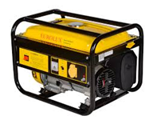
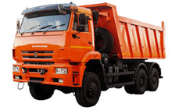

Установите
соответствие между изображением и видом машинА) энергетические машины
Б) информационные машины
В) рабочие машины
соответствие между изображением и видом машинА) энергетические машины
Б) информационные машины
В) рабочие машины
 |  |
Энергетическая машина даёт энергию, рабочая выполняет полезную работу, информационная обрабатывает сведения.